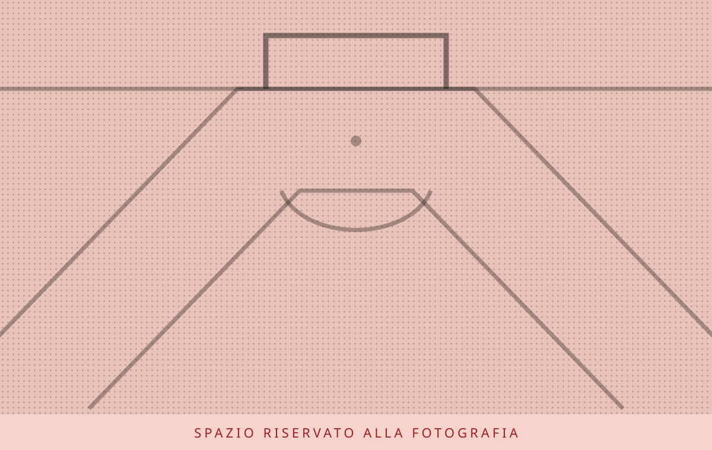

Juventus · Milan
Loftus-Cheek-Milan, aria di addio: la Juventus resta vigile
L'articolo Loftus-Cheek-Milan, aria di addio: la Juventus resta vigile proviene da CalcioMercato.it .
Calciomercato.it · 22 h fa
Quotidiano di trattative, firme e voci di corridoio
Juventus · Milan
L'articolo Loftus-Cheek-Milan, aria di addio: la Juventus resta vigile proviene da CalcioMercato.it .
Calciomercato.it · 22 h fa
Mercato
L'articolo Raimondo, comunicato ufficiale: tifosi del Frosinone in apprensione proviene da CalcioMercato.it .
Calciomercato.it · 1 g fa
Inter
L’Inter potrebbe prendere tempo prima di muoversi concretamente per Frank Zambo Anguissa.
TuttoNapoli · 7 h fa
Bologna
Il Bologna ha rotto gli indugi: secondo Sportitalia, il club rossoblu ha deciso di tesserare Matteo Darmian.
FcInterNews · 7 h fa
Juventus · Inter
L'Inter guarda al futuro e tiene sotto osservazione diversi profili in vista delle prossime sessioni di mercato.
TuttoJuve · 7 h fa
Bologna
L'articolo Darmian-Bologna, ci siamo: il difensore ripartirà dai rossoblu proviene da CalcioMercato.it .
Calciomercato.it · 9 h fa
Milan
La fase difensiva del Milan in questa stagione sta vivendo una profonda rivoluzione rispetto all'anno scorso vissuto con Massimiliano Allegri.
MilanNews · 8 h fa
Inter
L'articolo Inter, buone notizie per Chivu: come stanno Spence, Dimarco e Calhanoglu proviene da CalcioMercato.it .
Calciomercato.it · 10 h fa
Juventus
La Juventus continua a guardare al mercato degli attaccanti e dalla Francia emerge un nome nuovo e particolarmente interessante: Folarin Balogun, centravanti statunitense classe 2001 dell'AS Monaco, Juventus e Borussia…
TuttoJuve · 5 h fa
Bologna
L'articolo Carvajal nel mirino del Bologna, l’infortunio di Holm porta i rossoblu sul mercato proviene da CalcioMercato.it .
Calciomercato.it · 1 g fa
Mercato
L'articolo Juve, corsa a tre per la fascia sinistra: tutti i nomi proviene da CalcioMercato.it .
Calciomercato.it · 12 h fa

Milan
L'articolo Rabiot vicino al rinnovo fino al 2030: accordo ad un passo con il Milan proviene da CalcioMercato.it .
Calciomercato.it · 16 h fa
Calciomercato.it · 14 h fa
TuttoNapoli · 6 h fa
Calciomercato.it · 18 h fa
Calciomercato.it · 20 h fa
Calciomercato.it · 20 h fa
Calciomercato.it · 23 h fa
MilanNews · 6 h fa
FcInterNews · 7 h fa
MilanNews · 7 h fa
TuttoNapoli · 8 h fa
MilanNews · 9 h fa
FcInterNews · 9 h fa
5 h fa
9 h fa
6 h fa
5 h fa
5 h fa
7 h fa